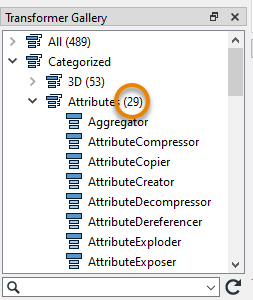

After completing this unit, you’ll be able to:
When Jennifer first began using FME, she found the list of almost 500 transformers a bit daunting. One of the most common challenges new FME users face is finding the right transformer for a given task. However, Jennifer learns that most users only focus on the subset of transformers that are relevant to their day-to-day workflow. Since Jennifer doesn’t plan on working with raster data in the near future, there is a whole category of raster-dedicated transformers that she doesn’t need to know. She knows she doesn’t need to be familiar with every single transformer to use FME effectively.
As she learned FME, Jennifer found the following resources useful for learning about transformers:
| Resource |
Why use it? |
| Searching using Quick Add in FME Workbench |
Quickly search transformers, see the Help, and add to the canvas to try them out. |
| Browsing or searching using the Transformer Gallery on safe.com |
Filter transformers by category and sort by most-used, plus links to Help. |
| Browsing or searching using the Transformer Gallery in FME Workbench |
Filter transformers by category and search directly in Workbench. |
| Using the FME Transformer Reference Guide |
Contains snippets from Help to explain transformer use-cases. |
Jennifer needs to find a new transformer for a different workspace that retrieves today’s weather from the MetaWeather API. She finds that the results of the API call (a web connection request for data located on the web) contain attributes that she doesn’t need. From her experience, she knows it would be tedious to manually remove them with an AttributeManager or AttributeRemover. She turns to her resources to find a transformer to help her.
First, she tries searching for some keywords in Quick Add. She opens her workspace and starts typing keywords. First she tries “deleter,” but this search is too specific and doesn’t return any results related to attributes. By default Quick Add searches for transformer names only, not descriptions. She presses the Tab key to search in the Help text, but this results in transformers that don’t meet her requirements.
She tries some more keywords in both search modes: “attribute,” “remover,” “eraser,” “simplifier,” etc. Some of these searches produce useful results, but they still contain too many transformers.

Jennifer decides to look in the Workbench Transformer Gallery categories. She sees the Attribute category, but it still has a lot of transformers in it. Again, she could look through this list and read the Help text, but it could take a while to find what she is looking for.

Jennifer now turns to the online Transformer Gallery. Here she restricts the category to Attributes. With the default Sort By set to “Most Used”, she scans the top attribute transformers and their descriptions. This method produces a promising result: the AttributeKeeper, one of the most-used attribute transformers! Its description reads, “Removes all attributes and list attributes, except the specific ones you specify to be retained.” That sounds like it should work.

Jennifer goes back to FME Workbench and adds an AttributeKeeper using Quick Add. She connects it to her workflow, sets the parameters, and finds it does just what she wanted. She can choose a few attributes she wants to keep and remove the rest.
If Jennifer’s use case was more complex, she might have considered using the Transformer Reference Guide or posting on the Community Forums for help.
You’ve read about Jennifer’s search for the AttributeKeeper. Now it’s your turn!
Using the techniques above and the starting workspace (in FME Workbench 2021.0 or later), try to find a transformer that will order your features in ascending alphabetical order by “last_name”. Once you find it, connect it between the GeometryFilter and the BusinessOwners feature type and use it to order your features. You can use Visual Preview with feature caching to confirm the features are in the right order. Your output should look like this: